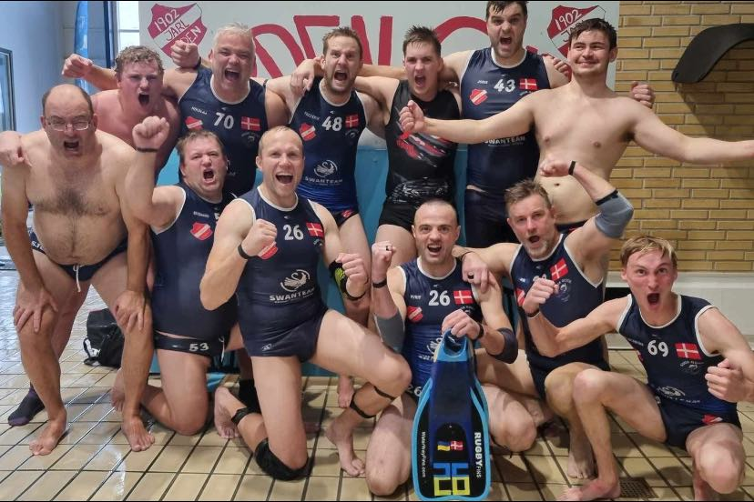

Nyheder og Events

ARDEN CUP 2025 Undervandsrugby som du aldrig har set det før! Lørdag
den 13. september forvandles svømmehallen i Arden til arena for fart,
styrke og strategi under overfladen!
Kom og oplev undervandsrugby i verdensklasse til Arden Cup 2025 - en
intens og actionfyldt sportsgren, hvor der kæmpes om sejren!
Sted: Arden Svømmehal
Tid: Kampene starter kl. 9.00
Entré: Gratis adgang for publikum!